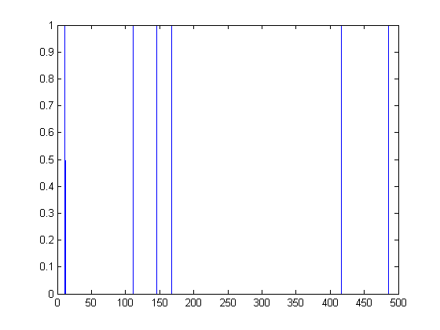
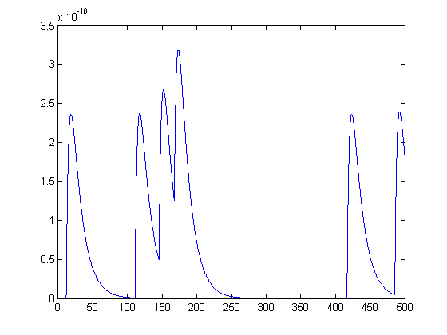
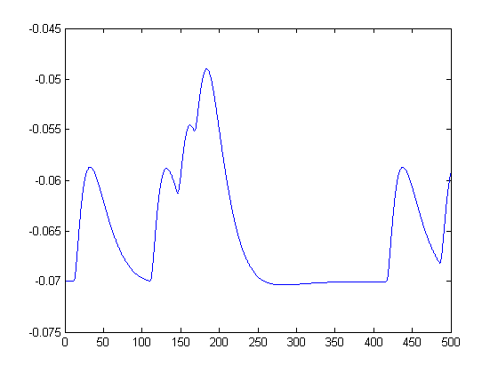

%function [] = q1p2(T,deltat,lambda) % lambda is the arrival rate per second (per milli-second) % T is the time in milli-seconds % deltat is the step size in milli-second T = 500; lambda = 0.01; deltat = 0.1; N = T/deltat; event = zeros(N,1); % array recording at each bucket if a stimulus arrived R = rand(size(event)); event(R<lambda*deltat) = 1; % set each element of event to 1 with probability lambda*delta tk = find(event==1); % getting indices of arrivial [tkr,tkc] = size(tk); %nspikes = size(tk); %inter_arrival = diff(tk)*deltat; % interarrival times in seconds %bin = 0:1:500; %count = histc(inter_arrival,bin); %figure; bar(bin,count,'histc'); % draw histogram of absolute count time = deltat:deltat:T; figure, plot(time, event); Io = 10^(-12); we = 500; % synaptic strength tc_m = 15; %time constant of membrane tc_s = tc_m/4; %time constant of synapse Iapp = zeros(N,1); %for i = 1:N % for j = 1:N % if ((event(j) == 1)&&(j<i)) % Iapp(i) = Iapp(i) + (exp((j-i)*deltat/tc_m) - exp((j-i)*deltat/tc_s)); % end % end %end for i = 1:N for j = 1:tkr if (tk(j)<i) Iapp(i) = Iapp(i) + (exp((tk(j)-i)*deltat/tc_m) - exp((tk(j)-i)*deltat/tc_s)); end end end Iapp = Iapp*Io*we; figure, plot(time,Iapp); [V,nspikes] = q1p2_func(1,0.5,Iapp,1); V = reshape(V,N,1); nspikes figure, plot(time,V);
nspikes =
0
  